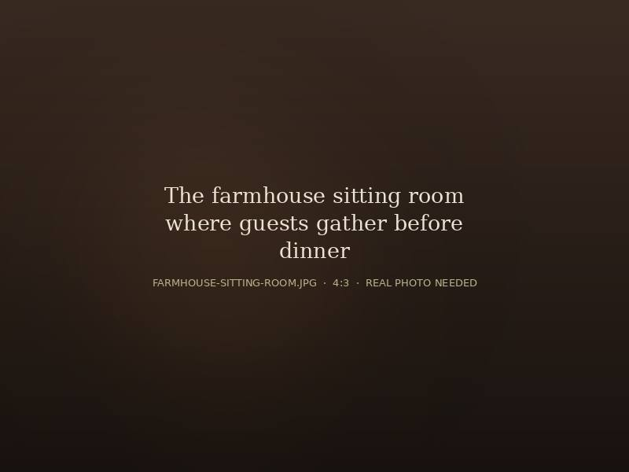

Make yourself at home and join us for dinner
Our Ottawa Valley farmhouse welcomes groups of up to 20 for private dining and intimate celebrations.
Come with time to enjoy the property, settle into the sitting room and catch up before gathering around the table. Chef Andi Marcus will create a menu especially for your group, plated or family-style.


A welcoming setting for your favourite people
Some occasions deserve a little more time together. Whether it’s a birthday, an anniversary or a long-overdue gathering of friends, the farmhouse gives you space to enjoy the company as well as the meal.
Spend time outdoors before dinner or make yourself comfortable inside. We want you to feel welcome from the moment you arrive.

Let’s create a menu for the occasion
I’ll work with you to plan a meal around your tastes and the way you’d like the evening to feel.
You might prefer the pace of a plated dinner, with each course brought to the table, or the pleasure of passing dishes and helping yourselves to a little more. Both are very much at home here.
Tell us who or what you’re celebrating and any details that matter to you.
We’ll talk through the food and arrangements together so the gathering feels personal to the people it’s for. And if your only reason for coming is that you’d like a good dinner with good friends, that’s reason enough.
We’d love to welcome you
Get in touch with your preferred date, approximate guest count and a little about your occasion.